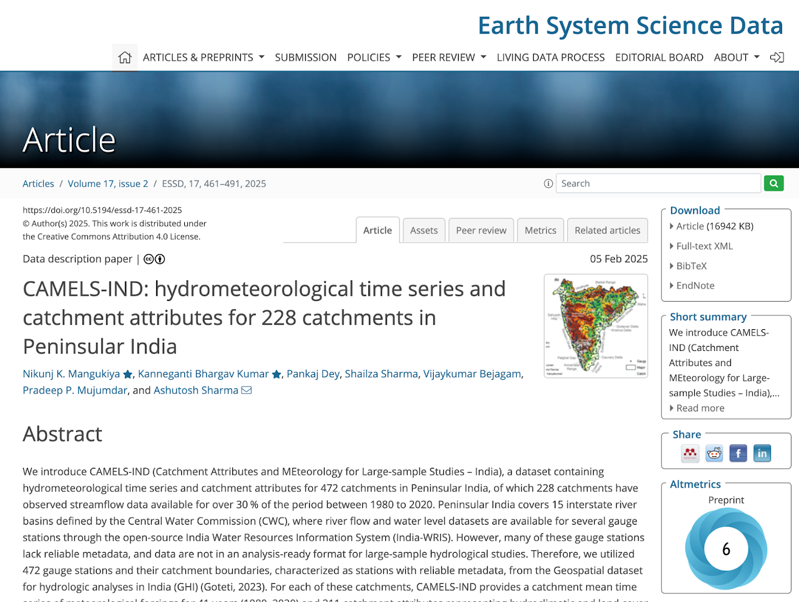
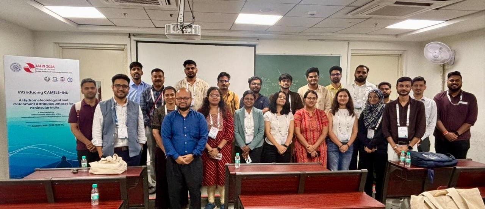
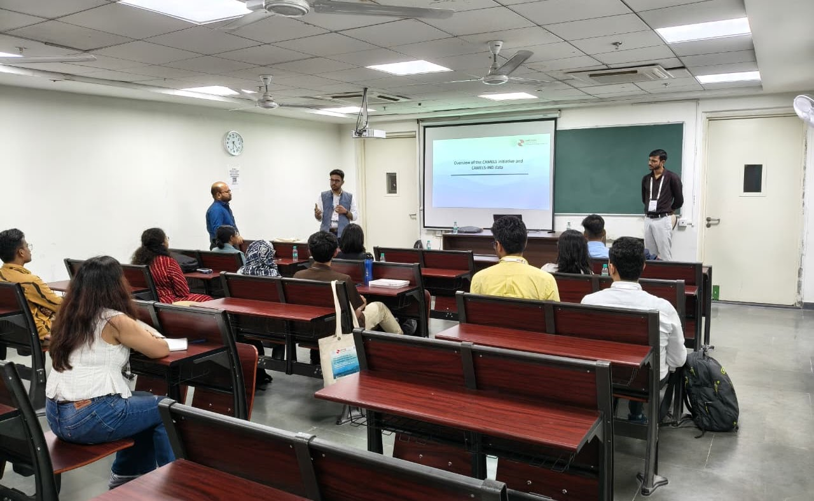

At a glance
CAMELS-IND Catchments

Hydrometeorological time series and catchment attributes for 472 catchments in Peninsular India — supporting large-sample hydrology, model benchmarking, and climate-impact studies.
Catchment Attributes and Meteorology for Large-sample Studies
CAMELS hydro-meteorological datasets are nationwide compilations of hundreds of catchments — their physical attributes, records of drainage dynamics, and corresponding meteorological time series. These datasets have reshaped how hydrological predictions, catchment classification, and analyses of change are carried out. They unify approaches to identifying hydrological signatures, serve as benchmarks for model development across settings, and have helped give rise to machine learning in water management. CAMELS datasets are a testament to open-data initiatives, showing how science, education, and management at regional to global scales benefit from open data.
CAMELS-IND is a hydrometeorological dataset for 472 catchments in Peninsular India, aimed at supporting large-scale hydrological studies. It provides time series of 19 meteorological variables for 1980–2020 and 211 catchment attributes. Of the 472 catchments, 242 have observed streamflow for over 30% of the period. It also incorporates human-influence factors such as dams, population density, and land-use change. Additionally, CAMELS-IND offers streamflow predictions from an LSTM-based hydrological model, enabling gap-filling or benchmarking of new models. The dataset is designed for studies on hydrology, water management, and climate-change impacts in India.

472 catchments in Peninsular India, including 242 with observed streamflow for over 30% of the 1980–2020 period.
19 variables — precipitation, temperature, radiation flux, wind, humidity, evapotranspiration, and soil moisture.
211 attributes spanning topography, hydroclimate, land cover, soil, geology, and human influences.
Observed streamflow plus LSTM-predicted streamflow for all catchments, enabling gap-filling and benchmarking.
Follows CAMELS standards used in the USA, Chile, Brazil and elsewhere for international comparison.
Data on dams, population density, and land-cover change for studying anthropogenic influence on hydrology.
A workshop, "Introducing CAMELS-IND," held during the XIIth Scientific Assembly of IAHS at IIT Roorkee — an overview of the CAMELS initiative, the data structures, and hands-on demonstrations.
1 — Overview of the CAMELS initiative and CAMELS-IND data.
2 — Key features of the CAMELS-IND data.
1 — Browsing the CAMELS-IND data.
2 — Extracting flood hydrographs using CAMELS-IND.
3 — Large-sample streamflow prediction using LSTM.


A selection of studies that have used the dataset. See all citing works on Google Scholar ↗
Mangukiya, N. K., Kumar, K. B., Dey, P., Sharma, S., Bejagam, V., Mujumdar, P. P., and Sharma, A.: CAMELS-IND: hydrometeorological time series and catchment attributes for 472 catchments in Peninsular India, Earth Syst. Sci. Data, 17, 461–491, 2025.
If you work with a dataset covering Indian catchments and would like to contribute catchment averages, please get in touch. We are committed to identifying and correcting errors — if you encounter any unrealistic or suspicious values, let us know.
The authors gratefully acknowledge the Central Water Commission (CWC), the National Water Informatics Centre (NWIC), and the Ministry of Jal Shakti for streamflow data via India-WRIS; the India Meteorological Department (IMD) for gridded rainfall and temperature data; and the National Centre for Medium Range Weather Forecasting (NCMRWF) for the IMDAA reanalysis, produced under collaboration between the UK Met Office, NCMRWF, and IMD with support from the Ministry of Earth Sciences under the National Monsoon Mission. Numerous other publicly available datasets were used in compiling catchment attributes and meteorological forcings, with acknowledgment and citation where applicable.
The CAMELS-IND dataset is openly accessible for academic and research purposes. While efforts have been made to ensure accuracy, the authors accept no responsibility for errors, omissions, or misuse. Users must cite the paper above and acknowledge that all interpretations and conclusions are their own. The dataset is provided "as is" without warranties; users are advised to verify the data before use.